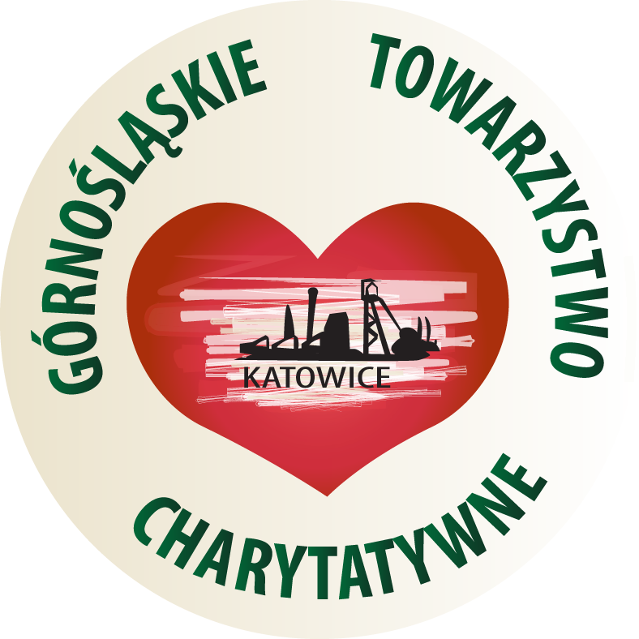
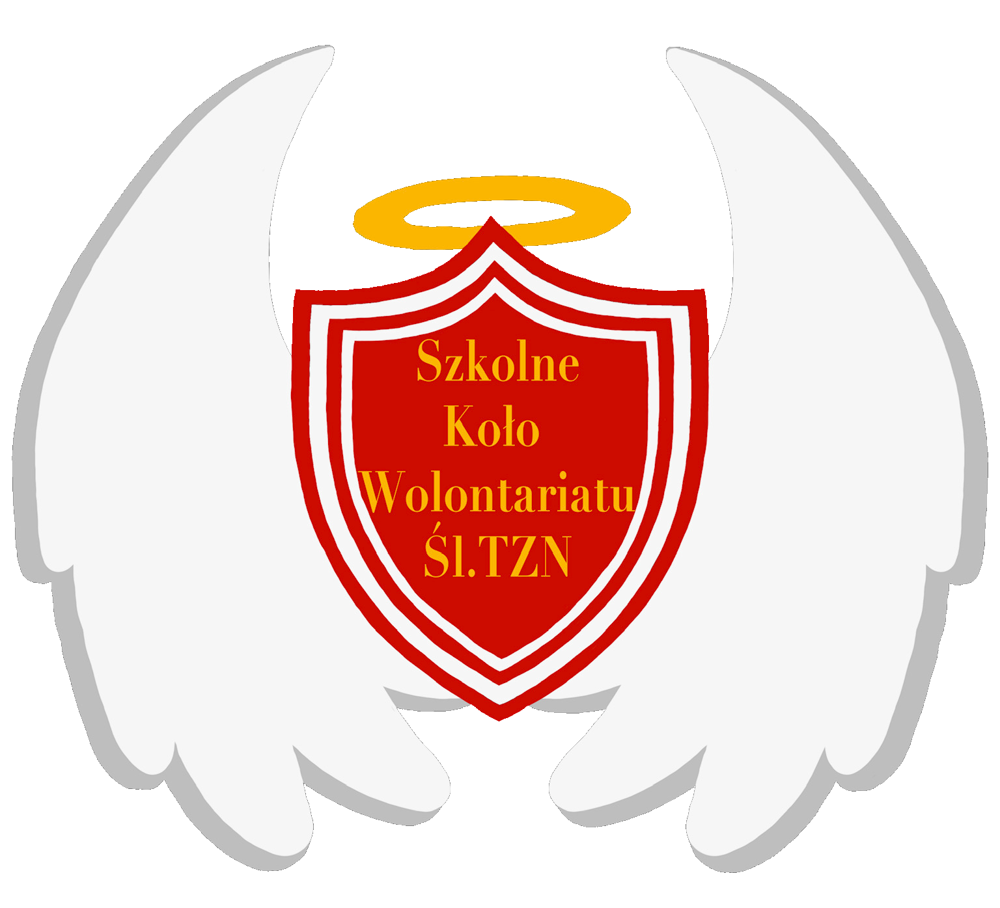

Słodki Tydzień Pomocy
26.02 - 03.03
 ZBIERAMY CUKIER DLA GÓRNOŚLĄSKIEGO TOWARZYSTWA CHARYTATYWNEGO!
Wystarczy przynieść dowolną ilość cukru do tych miejsc:
-Śląskie Techniczne Zakłady Naukowe w Katowicach przy wyjściu z budynku 2(głównego)
-Zakrystia Parafii św. Józefa Robotnika w Katowicach na Józefowcu
ul. Mikusińskiego 8 do zakrystii
To jedna z pierwszych pozarządowych i pozakościelnych organizacji charytatywnych, założona w 1989r. Prowadzi zbiórki odzieży dla potrzebujących, noclegownie, wydaje także posiłki dla bezdomnych, bezrobotnych i ubogich. Rocznie wydają ponad 120 tys. posiłków oraz ponad 50 tys. noclegów dla potrzebujących.
Ksiądz Adrian Przewoźniak
Pani psycholog Anita Wieloch
Pani profesor Agnieszka Dworak
Pani dyrektor Danuta Kleinert
Przewodniczący SU Śl.TZN Bartosz Gielarowski
Wolontariuszom: -Mikołaj Bloch-Zuzanna Maciaszek-Staskiewicz-Jakub Maślanka-Emilia Łabędzka-Dorota Bagińska-Dagmara Bąk-Nina Świątczak-Jakub Wcisło,Wojciech Zawadzki-